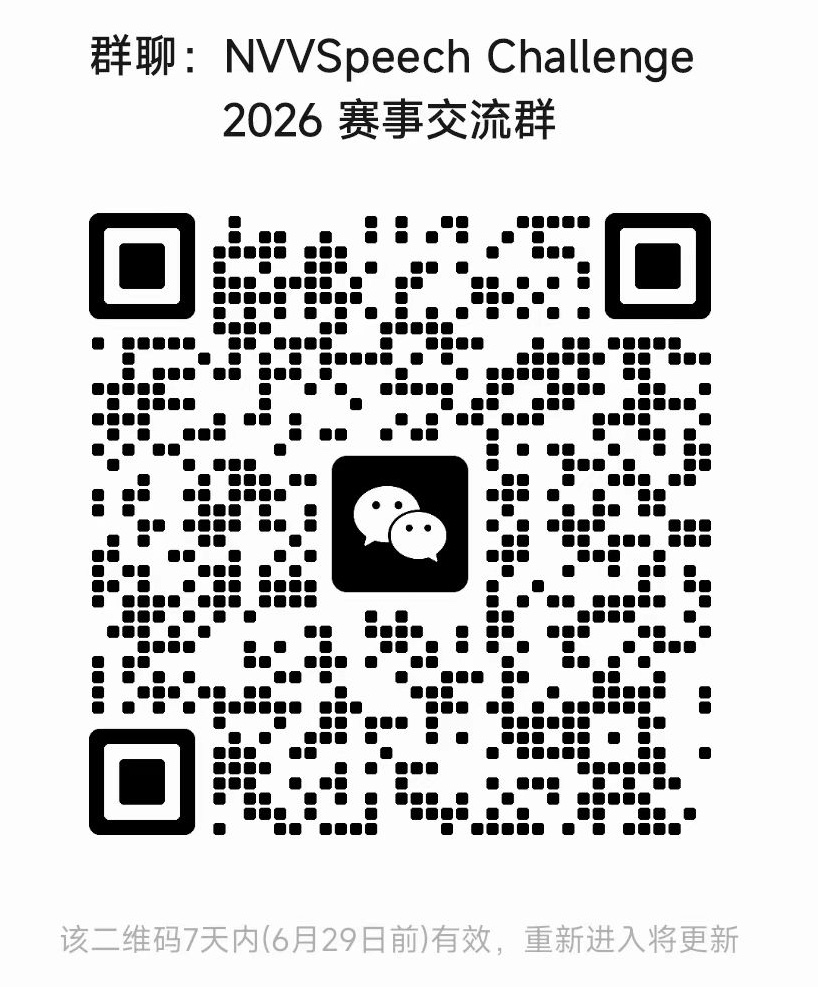

News
- 22 Jun 2026The challenge website is live and registration is now open via the Google and Tencent forms below.
- 15 Jun 2026The NVVSpeech Challenge has been accepted as a special challenge session at ISCSLP 2026.
Background and Motivation
Human spoken communication extends beyond linguistic content. In natural conversations, speakers frequently produce nonverbal vocalizations (NVVs), such as laughter, sighs, crying, coughing, breathing, gasps, yawns, and other paralinguistic sounds. These vocalizations convey emotion, attitude, feedback, turn-taking cues, social intent, and, in some cases, physiological states. However, most current spoken language processing systems remain largely transcript-centric: automatic speech recognition systems often omit or normalize nonverbal vocalizations, while text-to-speech systems usually focus on generating fluent linguistic content without reliably modeling or controlling such expressive vocal events.
Recent progress in speech language models, expressive speech synthesis, and multimodal conversational agents makes it timely to revisit speech with nonverbal vocalizations as a core spoken language processing problem. For understanding, systems need to detect, classify, and locate nonverbal vocalizations relative to the accompanying transcript. For generation, systems need to synthesize speech that naturally integrates specified nonverbal vocalizations while preserving speech intelligibility, naturalness, and acoustic continuity between verbal and nonverbal segments.
NVVSpeech challenge aims to promote nonverbal vocalizations as a crucial yet under-explored component of spoken language communication. It defines shared task settings for both Mandarin Chinese and English, provides held-out test sets, baseline implementations, and standardized evaluation protocols, and enables the community to examine the current capability boundaries of speech understanding and generation systems with nonverbal vocalizations. NVVSpeech will help identify remaining technical bottlenecks and establish more reproducible comparisons across systems, while encouraging research on paralinguistic speech understanding, expressive and controllable speech generation, speech language models, and evaluation methods for more human-like spoken interaction.
Challenge Overview
The challenge contains two tracks. Both tracks will be evaluated on Mandarin Chinese and English test sets.
Track 1 — Nonverbal Vocalizations Understanding in Speech
Task definition. Given an input speech recording, participants are required to generate a tagged transcript that identifies the spoken content and all nonverbal vocalizations (NVVs), including their categories and transcript-relative positions.
Input. Audio recordings containing natural speech with one, or multiple NVVs. For the evaluation set, only the audio recordings will be released. Reference transcripts and NVV annotations will remain hidden for official evaluation.
Output. Participants submit a structured prediction file for each utterance, for example:
{
"utt_id": "example_001",
"text_with_nvvs": "That was really surprising. [laugh]"
}
Evaluation metrics. Track 1 evaluates the ability to jointly recognize NVV categories, predict their transcript-relative positions, and generate accurate tagged transcripts.
The official ranking score is defined as:
$$\text{Track1Score} = 100 \times \big[0.70 \cdot F1_{\text{micro}} + 0.20 \cdot (1-\text{mNTD}) + 0.10 \cdot (1-\min(\text{Err}_{\text{tagged}},1))\big]$$
- Event-based Micro F1 is computed by pooling all NVV events across categories. A predicted event is considered correct only when it has the correct NVV category and transcript-relative position after text normalization and alignment.
- Multi-event Normalized Tag Distance (mNTD) measures the placement error between predicted and reference NVV tags. Lower mNTD indicates more accurate NVV placement.
- Tagged-transcript Error is computed on the complete transcript with NVV tags, where each NVV tag is treated as a single atomic token. For Mandarin Chinese, we report tag-aware character error rate (CER); for English, we report tag-aware word error rate (WER). Lower error rates indicate more accurate recognition of both linguistic content and NVV tags.
The final bilingual ranking score is the average of the Chinese and English scores:
$$\text{FinalTrack1Score} = \frac{\text{Track1Score}_{ZH} + \text{Track1Score}_{EN}}{2}$$
Track 2 — Controllable Speech Generation with Nonverbal Vocalizations
Task definition. Given a transcript containing one or more NVV tags, participants are required to generate speech that naturally integrates the specified NVVs while maintaining intelligibility, naturalness, quality, and appropriate expressive delivery.
Input. Each test sample contains a tagged transcript, for example:
{
"utt_id": "example_002",
"text_with_nvvs": "That was really surprising. [laugh]"
}
Output. Participants must submit one generated waveform for each test utterance in 16 kHz,
mono, 16-bit PCM WAV format. Each file must be named using the corresponding utt_id
(e.g., example_002.wav). Systems with different native sampling rates may resample their
outputs to the required format before submission.
Evaluation metrics. Track 2 evaluates whether a system can generate the intended NVVs while maintaining natural, high-quality, and contextually appropriate speech. Evaluation will be conducted using standardized large audio-language model (LALM)-based assessment and human listening tests.
For each language, the official score is defined as:
$$\text{Track2Score} = 100 \times (0.30A + 0.25P + 0.15N + 0.15Q + 0.15E)$$
- NVV Accuracy (A) measures whether the intended NVV types, numbers, and positions are correctly realized. If the target NVV is absent or almost inaudible, the score is 0.
- NVV Perceptual Effect (P) measures whether the intended NVVs are clearly audible, recognizable, and perceptually effective. A score of 0 indicates that the target NVV is absent or almost inaudible.
- Overall Naturalness (N) measures the naturalness, fluency, and acoustic continuity of the full utterance.
- Overall Quality (Q) measures perceived audio quality, including the absence of noticeable artifacts.
- Overall Expression (E) measures whether the expressive delivery is coherent and appropriate for the linguistic content, target NVVs, and conversational context.
The evaluation design is adapted from NVV-SuperBench. Further details of the evaluation framework are available in the paper. Code, evaluation scripts, and related resources are available on GitHub.
The final bilingual ranking score is the average of the Chinese and English scores:
$$\text{FinalTrack2Score} = \frac{\text{Track2Score}_{ZH} + \text{Track2Score}_{EN}}{2}$$
For the public leaderboard, scores will be obtained using a fixed LALM-based multi-rater evaluation protocol. For the final ranking, top-ranked systems will additionally undergo human listening tests. The final scores will combine LALM-based and human ratings according to the official evaluation protocol.
Systems will be ranked by the final Track2Score in descending order. In the event of a tie, higher NVV Accuracy, higher NVV Perceptual Effect, and higher Overall Naturalness will be used sequentially as tie-breaking criteria.
NVV Label Set & Samples
Click on a label to listen to an example sample and read its transcript.
💨 breath
你讲话可以正经一点吗？很正经了，[breath]比你年轻的快乐，正经一百倍[breath]。 你[breath]
Can you talk a bit more seriously? Very serious indeed, [breath] a hundred times more serious than the happiness of your youth [breath]. You [breath]
👃 sniff
走进新装修好的房子，[sniffl] 有一股淡淡的油漆味和木头的味道。
Walking into the newly renovated house, [sniffl] there's a faint smell of paint and wood.
😂 laugh
[laugh]小朋友们，刚刚谢谢你们扶我了。
[laugh] Kids, thank you for helping me up just now.
😢 cry
[cry] 这些倭寇他们把所有能拿走的都拿走了，把所有带不走的全烧了。
[cry] These invaders took everything they could carry away, and burned everything they couldn't.
😷 cough
蜜蜂的舞蹈能够精准的告诉同伴[cough]蜜源的位置，真是奇妙的沟通方式。
A bee's dance can precisely tell its companions [cough] the location of nectar sources—what a wonderful way to communicate.
🧹 throat clearing
[throat clearing]听他的先休息去吧，要是自己睡不着，可以两个人一间全当是男生寝室和女生寝室。
[throat clearing] Listen to him, go rest first. If you can't fall asleep, you two can share a room—just treat it like the boys' and girls' dorms.
🤧 sneeze
这鬼天气，[breath]，我感觉自己肯定是感冒了，刚才开会的时候就 [sneeze] 没忍住，真尴尬。
This terrible weather, [breath], I'm sure I've caught a cold. I couldn't hold it back during the meeting just now [sneeze], so embarrassing.
😔 sigh
看着同事们一个个都升职了，而我还在原地踏步，[sigh]，心里真不是滋味。
Watching my colleagues get promoted one after another while I'm still stuck in place, [sigh], it really doesn't feel good.
😮 gasp
[gasp]什么洛家，什么天蓝，你是我的，是我救了你。
[gasp] What Luo family, what Tianlan—you are mine, I'm the one who saved you.
😴 snore
[snore]好家伙呼呼的他睡着了，刘球着急了，救寨主，九寨主嗯。
[snore] Wow, he's snoring away fast asleep. Liu Qiu got anxious—save the chief, ninth chief, hmm.
🥱 yawn
[yawn]嗯睡得不错，要不要过来吃早饭啊，不了不了，你上了一天班，快去睡觉吧。
[yawn] Hmm, slept well. Want to come have breakfast? No, no, you worked all day, go to sleep.
🎵 hum
[hum], 又学会了一首新的吉他曲子，真有成就感。
[hum], learned a new guitar tune again—what a sense of accomplishment.
😩 moan
我这才刚忙完，[moan]，怎么又来事了
I just finished being busy, [moan], why is there something else again.
😬 hiss
那个巨大的蛇形怪物 [hiss] 从洞穴里探出头，英雄们一边艰难地抵挡它的攻击，一边寻找机会，最终一剑刺穿了它的弱点。
The giant serpent-like monster [hiss] poked its head out of the cave. The heroes struggled to fend off its attacks while looking for an opening, and finally pierced its weak point with a single sword strike.
😋 lipsmack
我敢发誓我眼睛都没眨，那条手帕就在他手里变成了一只白鸽，这手法 [lipsmack] 简直是艺术。
I swear I didn't even blink, and that handkerchief in his hand turned into a white dove. This sleight of hand [lipsmack] is simply art.
🤢 burp
哎呀，这顿饭吃得太撑了，[burp] 我感觉我晚饭都不用吃了。
Ugh, I ate way too much this meal, [burp] I don't think I'll even need dinner.
Challenge Timeline
The timeline is designed to align with the ISCSLP 2026 special session and challenge schedule.
- 22 June 2026Challenge website and registration open
- 6 July 2026Baseline system
- 22 July 2026Evaluation set release
- 29 July 2026Final system submission deadline / leaderboard freeze
- 3 August 2026System description paper submission deadline
- 31 August 2026Paper acceptance notification
- 21 September 2026Camera-ready deadline
- 14–17 November 2026ISCSLP 2026 conference
Challenge Rules
- Open-resource setting. The organizers will provide the evaluation inputs and task formats, but not an official training set. Participants may use publicly available datasets, pretrained models, and other resources that are legally permitted for academic research.
- External resources and disclosure. All external datasets, pretrained models, synthetic data, data augmentation methods, external tools, and APIs used in a submission must be clearly disclosed in the system description paper. Participants are responsible for complying with the licenses and terms of use of all external resources.
- Evaluation data and hidden labels. Participants may download and use the officially released evaluation inputs. The corresponding reference labels and evaluation answers will remain hidden. Participants must not obtain or use any hidden test annotations, reference outputs, or other undisclosed evaluation information through data leakage, unauthorized access, or other improper means.
- No manual test-set intervention. All submitted predictions and generated waveforms must be produced automatically by the submitted system. Manual, sample-by-sample annotation, correction, selection, or modification of test predictions or evaluation outputs is prohibited.
- Track 2 generation requirements. Each submitted waveform must be fully generated by the submitted system from the provided test input. Manual waveform editing, manually selected sample-level splicing, or test-instance-specific recording is prohibited. Automatic post-processing that is part of the submitted pipeline is allowed but must be disclosed.
- Reproducibility verification. Teams provisionally ranked among the top submissions may be required to provide inference scripts, model configurations, and environment specifications for verification. Teams that fail to provide the requested materials within the specified deadline may be removed from the official final ranking.
- System description paper. A system description paper must be submitted by the stated deadline for a team to be eligible for the official final ranking, awards, and presentation in the challenge session. Teams without a submitted paper may appear on the public leaderboard but will be treated as unofficial.
Registration
Leaderboard
The leaderboard will open after the evaluation set is released on 22 July 2026. Official rankings for Track 1 and Track 2 will be published here following the evaluation protocol described above.
Challenge Organizers
Contact
If you have any questions, feel free to contact us:
Email: nvvspeech_iscslp2026@googlegroups.com
Show WeChat group QR code

FAQ
FAQ will be updated here as questions arrive.
Citation
The evaluation framework behind this challenge is described in the NVV-SuperBench paper. If you use this challenge or its evaluation protocol in your work, please cite:
@article{xue2026nvvsuperbench,
title = {{NVV-SuperBench}: Beyond Words, Beyond Quality---Benchmarking Nonverbal Vocalizations in Speech Generation},
author = {Xue, Liumeng and Bian, Weizhen and Pan, Jiahao and Wu, Wenxuan and Ren, Yilin and Kang, Boyi and Hu, Jingbin and Ma, Ziyang and Wang, Shuai and Qian, Xinyuan and Lee, Hung-yi and Guo, Yike},
journal = {arXiv preprint arXiv:2604.16211},
year = {2026}
}